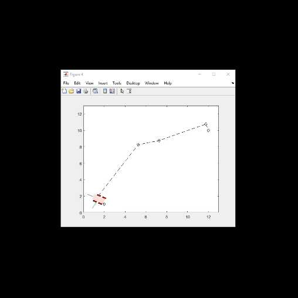

As a Mechanical Engineering student at the University of Illinois Urbana-Champaign, there are a ton of clubs where I am able to develop my technical and teamwork skills. However, my deep interest in robotics and automation lead me to IRIS.
The NASA Lunabotics competition serves as a platform for aspiring engineers to showcase their skills in developing robotic systems capable of excavating lunar regolith – a crucial task for future space exploration and habitation. My involvement with IRIS has been instrumental in shaping my understanding of complex robotics systems, honing my problem-solving skills, and fostering a collaborative spirit within a multidisciplinary team.
